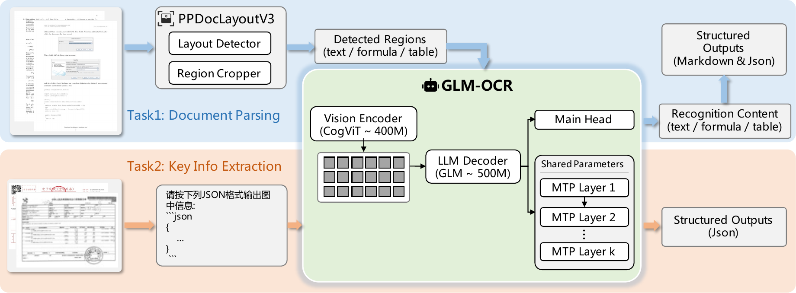
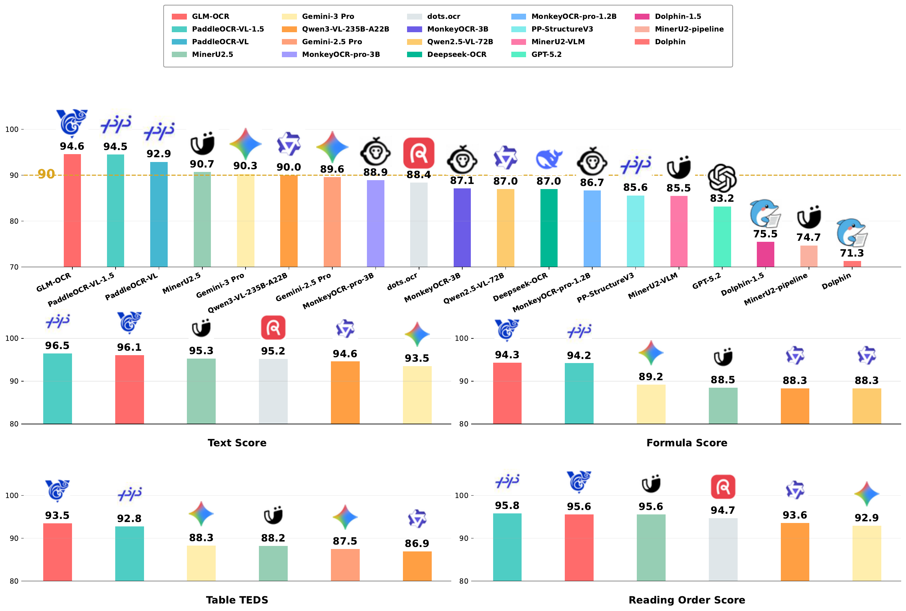
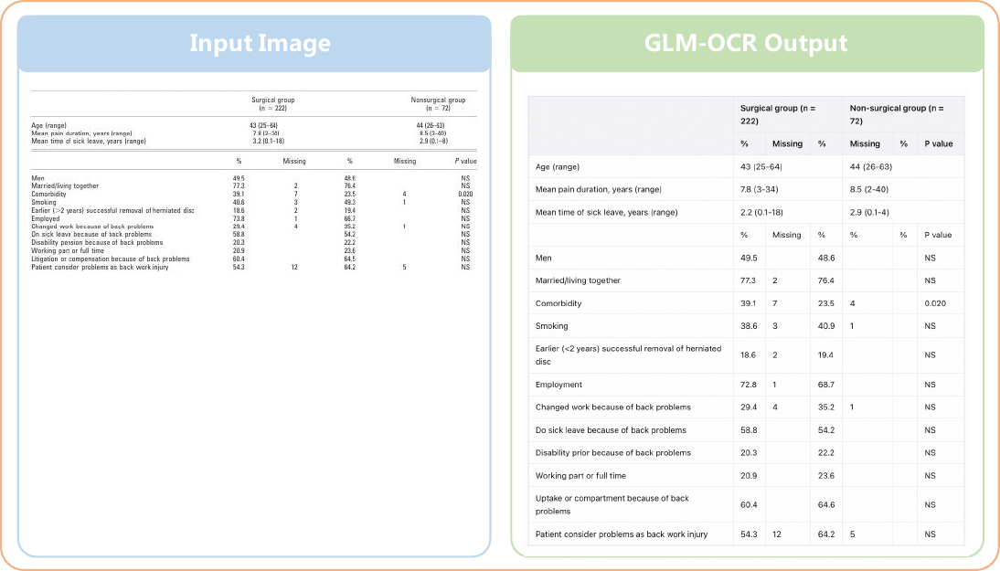

问题与动机
大型 MLLM（如 Qwen3-VL-235B）虽然能做文档理解，但计算成本高、推理慢、内存消耗大，难以在高频并发或边缘环境部署。
OCR 是确定性、结构化、局部依赖的任务，不必用笨重的 autoregressive 逐 token 解码。MTP（Multi-Token Prediction）可以并行预测多个 token，大幅提升效率。
• 文档解析（Document Parsing）
• 公式识别（Formula Recognition）
• 表格抽取（Table Extraction）
• 关键信息抽取（KIE）
• 印章识别（Seal Recognition）
• 多语种 OCR

0.9B 模型（0.4B CogViT + 0.5B GLM）通过 MTP 实现 50% 吞吐提升，同时保持 SOTA 性能。
两阶段 Pipeline + MTP
大规模图文数据预训练，大规模图文预训练。MIM+CLIP 目标，ViT 蒸馏。
统一生成框架：Document Parsing 和 KIE 统一为条件结构化生成，输出 Markdown / JSON。
训练时每步预测 10 token，推理时平均每步生成 5.2 token ≈ 50% 吞吐量提升。

实验结果与分析
在 OmniDocBench v1.5 和其他公开基准上评测。GLM-OCR 0.9B 超越 235B 级模型和 Gemini-3-Pro。
| 模型 | 参数量 | Overall |
|---|---|---|
| 对比模型 | ||
| Qwen3-VL-235B | 235B | 89.15 |
| Gemini-3 Pro | — | 90.33 |
| PaddleOCR-VL-1.5 | — | 94.50 |
| GLM-OCR | 0.9B | 94.62 |
GLM-OCR 在 OmniDocBench 上达到 94.62（第一），尤其在表格任务上最强（Table_TEDS: 93.96）。

专用轻量模型 + MTP + 两阶段设计可以在文档理解这种结构化任务上击败通用大模型。类似思路可用于 GUI Agent 的边缘部署。